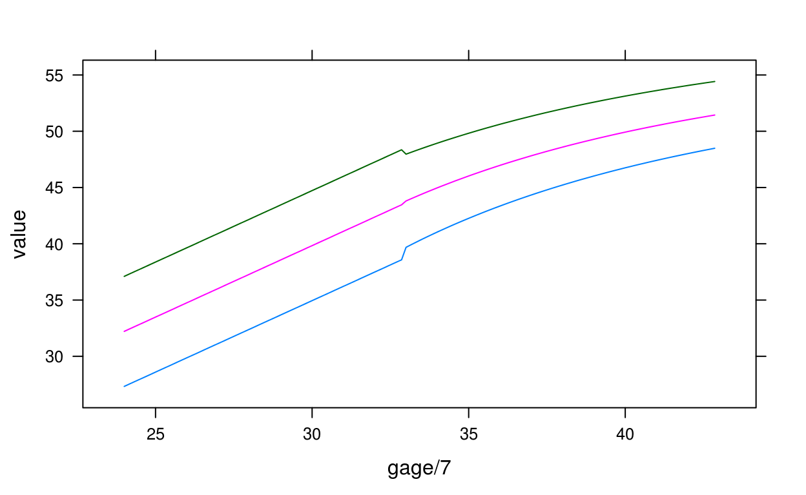
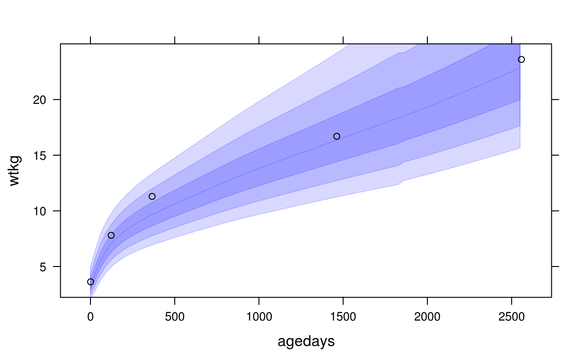
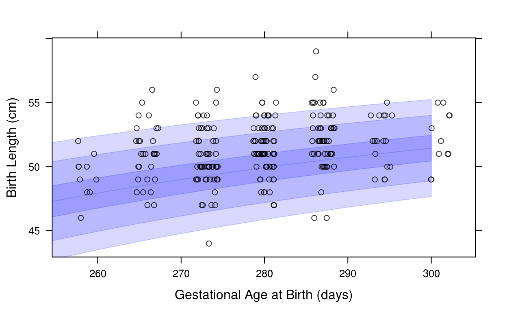
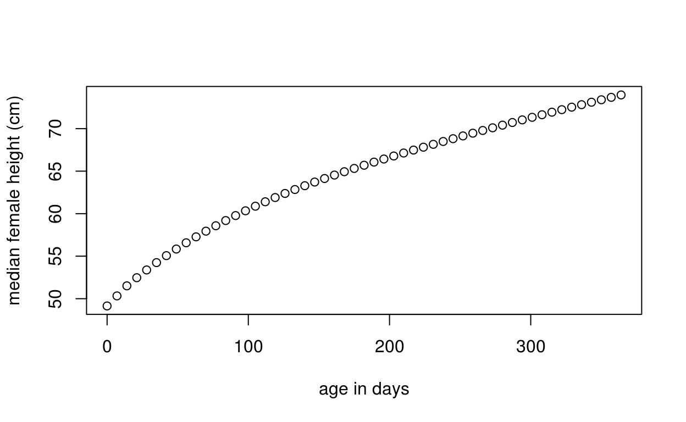
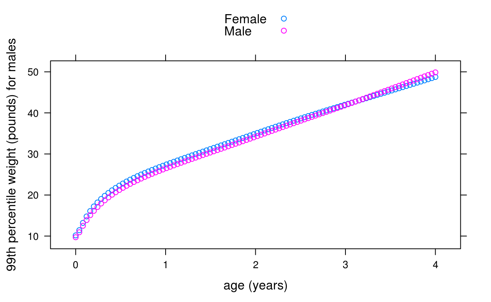
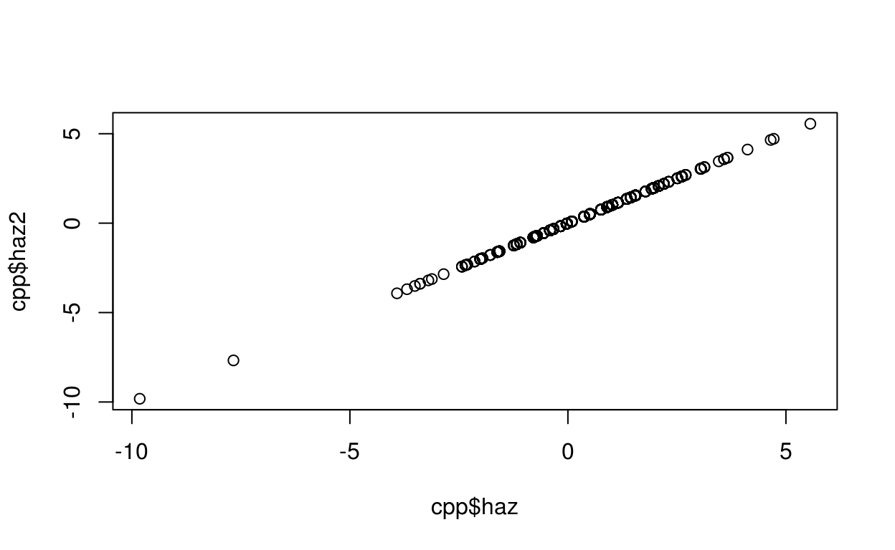

Authors: Ryan Hafen [aut, cre]
Version: 0.1.1
License: MIT + file LICENSE
Convert anthropometric measurements to or from z-scores and centiles using the WHO and INTERGROWTH growth standards. The WHO standard are used for infants, children, and young adults. INTERGROWTH standards are provided for fetal and newborn (including very preterm) calculations.
R (>= 3.1)
lattice, gamlss.dist, ggplot2, grid, rbokeh, dplyr
testthat, lintr, packagedocs
Subset of growth data from the collaborative perinatal project (CPP).
cpphttps://catalog.archives.gov/id/606622
Broman, Sarah. “The collaborative perinatal project: an overview.” Handbook of longitudinal research 1 (1984): 185-227.
head(cpp)## subjid agedays wtkg htcm lencm bmi waz haz whz baz siteid
## 1 1 1 4.621 55 55 15.27603 2.38 2.61 0.19 1.35 5
## 2 1 123 8.760 NA NA NA 1.99 NA NA NA 5
## 3 1 366 14.500 79 79 23.23346 3.84 1.35 4.02 3.89 5
## 4 2 1 3.345 51 51 12.86044 0.06 0.50 -0.64 -0.43 5
## 5 2 123 4.340 NA NA NA -3.99 NA NA NA 5
## 6 2 366 8.400 73 73 15.76281 -1.27 -1.17 -0.96 -0.80 5
## sexn sex feedingn feeding gagebrth birthwt birthlen apgar1 apgar5 mage
## 1 1 Male 90 Unknown 287 4621 55 8 9 21
## 2 1 Male 90 Unknown 287 4621 55 8 9 21
## 3 1 Male 90 Unknown 287 4621 55 8 9 21
## 4 1 Male 90 Unknown 280 3345 51 8 9 15
## 5 1 Male 90 Unknown 280 3345 51 8 9 15
## 6 1 Male 90 Unknown 280 3345 51 8 9 15
## mracen mrace mmaritn mmarit meducyrs sesn ses parity gravida
## 1 5 White 1 Married 12 50 Middle 1 1
## 2 5 White 1 Married 12 50 Middle 1 1
## 3 5 White 1 Married 12 50 Middle 1 1
## 4 5 White 1 Married NA NA . 0 0
## 5 5 White 1 Married NA NA . 0 0
## 6 5 White 1 Married NA NA . 0 0
## smoked mcignum preeclmp comprisk geniq sysbp diabp
## 1 0 0 0 none NA NA NA
## 2 0 0 0 none NA NA NA
## 3 0 0 0 none NA NA NA
## 4 1 35 0 none NA NA NA
## 5 1 35 0 none NA NA NA
## 6 1 35 0 none NA NA NAA list of coefficients from the INTERGROWTH birth standard.
https://intergrowth21.tghn.org
International standards for newborn weight, length, and head circumference by gestational age and sex: the Newborn Cross-Sectional Study of the INTERGROWTH-21st Project Villar, José et al. The Lancet, Volume 384, Issue 9946, 857-868
head(ig_coefs$hcircm$Female)## ga mu sigma nu tau
## 1 231 30.38709 1.310714 1.045915 20.97268
## 2 232 30.47791 1.303260 1.045915 20.97268
## 3 233 30.56873 1.295806 1.045915 20.97268
## 4 234 30.65829 1.288488 1.045915 20.97268
## 5 235 30.74660 1.281304 1.045915 20.97268
## 6 236 30.83370 1.274251 1.045915 20.97268igb_centile2value, igb_value2centile, igb_zscore2value, igb_value2zscore
A list of coefficients from the INTERGROWTH very preterm birth standard.
https://intergrowth21.tghn.org
INTERGROWTH-21st very preterm size at birth reference charts. Lancet 2016 doi.org/10.1016/S0140-6736(16) 00384-6. Villar, José et al.
ig_early_coefs$hcircm$Female## NULLigb_centile2value, igb_value2centile, igb_zscore2value, igb_value2zscore
A list of coefficients from the WHO for various pairs of growth standards that are used to compute quantiles and z-scores. The format is a list, where each element is a pairing of variables, e.g. “wtkg_agedays”, “htcm_agedays”, “bmi_agedays”, “hcircm_agedays”, “muaccm_agedays”, “ss_agedays”, “tsftmm_agedays”, “wtkg_lencm”“wtkg_htcm”. Within each of these elements is a list for sex with names “Female” and “Male”.
0-5 years: http://www.who.int/childgrowth/software/en/
5-15 years: http://www.who.int/growthref/tools/en/
head(who_coefs$htcm_age$Female$data)## x l m s loh
## 1858 0 1 49.1477 0.03790 L
## 1859 1 1 49.3166 0.03783 L
## 1860 2 1 49.4854 0.03776 L
## 1861 3 1 49.6543 0.03770 L
## 1862 4 1 49.8232 0.03763 L
## 1863 5 1 49.9921 0.03756 Lwho_centile2value, who_value2centile, who_zscore2value, who_value2zscore
Convert anthropometric measurements to or from z-scores and centiles using the WHO and INTERGROWTH growth standards. The WHO standard are used for infants, children, and young adults. INTERGROWTH standards are provided for fetal and newborn (including very preterm) calculations.
http://hbgdki.github.io/growthstandards/
help(package = "growthstandards")
browseURL("http://hbgdki.github.io/growthstandards/")igb_value2centile(gagebrth, val, var = "lencm", sex = "Female")
igb_value2zscore(gagebrth, val, var = "lencm", sex = "Female")For gestational ages between 24 and 33 weeks, the INTERGROWTH very early preterm standard is used.
International standards for newborn weight, length, and head circumference by gestational age and sex: the Newborn Cross-Sectional Study of the INTERGROWTH-21st Project Villar, José et al. The Lancet, Volume 384, Issue 9946, 857-868
INTERGROWTH-21st very preterm size at birth reference charts. Lancet 2016 doi.org/10.1016/S0140-6736(16) 00384-6. Villar, José et al.
# get Male birth length z-scores
# first we need just 1 record per subject with subject-level data
cppsubj <- subset(cpp, !duplicated(cpp$subjid))
cppsubj <- subset(cppsubj, sex == "Male")
igb_value2zscore(cpp$gagebrth, cpp$birthlen, var = "lencm", sex = "Male")## [1] 2.57008863 2.57008863 2.57008863 0.66769390 0.66769390
## [6] 0.66769390 0.66769390 2.77551410 0.24012569 1.20761609
## [11] 0.43007110 1.53920598 1.53920598 1.53920598 1.53920598
## [16] 1.53920598 1.53920598 1.53920598 1.53920598 1.53920598
## [21] 2.57008863 2.57008863 2.57008863 2.57008863 2.57008863
## [26] NA NA 1.37080474 1.37080474 1.37080474
## [31] 2.08629993 2.08629993 2.08167545 2.08167545 2.08167545
## [36] -0.92887191 -0.92887191 -0.92887191 -0.92887191 -0.17659363
## [41] -0.17659363 -0.17659363 -0.17659363 -0.17659363 0.43007110
## [46] 0.43007110 0.43007110 0.43007110 0.04777744 0.04777744
## [51] 0.04777744 0.04777744 -0.95427104 -0.95427104 -0.95427104
## [56] -0.95427104 -0.95427104 0.04777744 0.04777744 0.04777744
## [61] 0.04777744 0.10144540 0.10144540 0.10144540 1.01947447
## [66] 1.01947447 1.01947447 1.01947447 1.26177582 1.26177582
## [71] 1.26177582 1.26177582 1.26177582 1.01947447 1.01947447
## [76] 1.01947447 1.01947447 1.01947447 0.04777744 0.04777744
## [81] 0.04777744 0.04777744 0.04777744 2.08629993 2.08629993
## [86] 2.08629993 2.08629993 0.43007110 0.43007110 0.43007110
## [91] 0.43007110 0.04777744 2.08629993 2.08629993 2.08629993
## [96] 0.81893628 0.81893628 0.81893628 1.01947447 1.01947447
## [101] 1.01947447 1.01947447 0.24012569 0.24012569 0.24012569
## [106] 0.24012569 0.94776774 0.94776774 0.94776774 0.94776774
## [111] 1.26326658 1.26326658 1.26326658 1.26326658 1.26326658
## [116] 0.04777744 0.04777744 0.04777744 0.04777744 0.66769390
## [121] 0.66769390 0.66769390 -0.17659363 -0.17659363 -0.17659363
## [126] -0.17659363 0.43007110 0.43007110 0.43007110 0.43007110
## [131] 1.57506493 1.57506493 1.57506493 1.57506493 -0.57693404
## [136] -0.57693404 -0.57693404 -0.57693404 -1.18192366 -1.18192366
## [141] -1.18192366 -1.18192366 -1.18192366 0.32057449 0.32057449
## [146] 0.32057449 0.32057449 -0.32198638 -0.32198638 -0.32198638
## [151] -0.32198638 -0.32198638 NA NA NA
## [156] 1.01947447 1.01947447 1.01947447 -0.32198638 -0.32198638
## [161] -0.32198638 -0.32198638 0.32057449 0.32057449 0.32057449
## [166] 0.43007110 0.43007110 0.43007110 1.84381500 1.84381500
## [171] 1.84381500 0.24012569 0.24012569 0.24012569 0.24012569
## [176] 1.88394745 1.88394745 1.88394745 1.88394745 1.88394745
## [181] -0.95427104 -0.95427104 -0.95427104 -0.95427104 -0.95427104
## [186] -0.32198638 -0.32198638 -0.32198638 -0.32198638 -0.32198638
## [191] 1.57506493 1.57506493 1.57506493 1.57506493 -0.57693404
## [196] -0.57693404 -0.57693404 -0.57693404 0.04777744 0.04777744
## [201] -1.88881195 -1.88881195 -1.88881195 -1.88881195 0.43007110
## [206] 0.43007110 0.43007110 -0.57693404 -0.57693404 -0.57693404
## [211] -0.57693404 0.10144540 0.10144540 0.10144540 2.54912777
## [216] 2.54912777 2.54912777 2.54912777 1.53920598 1.53920598
## [221] 1.53920598 1.53920598 -0.01724797 -0.01724797 -0.01724797
## [226] -0.01724797 -0.17659363 -0.17659363 -0.17659363 -0.17659363
## [231] 0.04777744 0.04777744 0.04777744 0.04777744 0.04777744
## [236] 2.31733522 2.31733522 2.31733522 2.31733522 2.31733522
## [241] 2.31733522 0.32057449 0.32057449 0.32057449 0.32057449
## [246] 0.32057449 0.32057449 1.53920598 1.53920598 1.53920598
## [251] 2.54912777 2.54912777 2.54912777 2.54912777 -1.02459617
## [256] -1.02459617 -1.02459617 -2.82067962 0.63678619 0.63678619
## [261] 0.63678619 0.63678619 0.66769390 0.66769390 0.66769390
## [266] 0.66769390 1.37080474 1.37080474 1.37080474 1.37080474
## [271] 0.24012569 0.24012569 0.24012569 0.24012569 3.15541741
## [276] 3.15541741 3.15541741 3.15541741 0.32057449 0.32057449
## [281] 0.32057449 0.32057449 -0.57693404 -0.57693404 -0.57693404
## [286] -0.57693404 0.24012569 0.24012569 0.24012569 0.24012569
## [291] 2.31733522 2.31733522 2.31733522 2.31733522 2.08167545
## [296] 2.08167545 2.08167545 2.08167545 1.53920598 1.53920598
## [301] 1.53920598 1.53920598 0.66769390 0.66769390 0.66769390
## [306] 0.66769390 0.66769390 1.81440917 1.81440917 1.81440917
## [311] 1.81440917 1.57506493 1.57506493 1.57506493 1.57506493
## [316] 1.26177582 1.26177582 1.26177582 1.26177582 1.26177582
## [321] 1.26177582 1.26177582 1.81440917 1.81440917 1.81440917
## [326] 1.81440917 1.81440917 1.26326658 1.26326658 1.26326658
## [331] 1.26326658 NA NA NA NA
## [336] -0.32198638 -0.32198638 -0.32198638 -0.32198638 2.35247762
## [341] 2.35247762 2.35247762 2.35247762 2.35247762 2.35247762
## [346] 2.35247762 2.35247762 2.35247762 2.08629993 2.08629993
## [351] 2.08629993 2.08629993 2.76890374 2.76890374 2.76890374
## [356] 2.76890374 2.08629993 2.08629993 2.08629993 2.08629993
## [361] 2.31733522 2.31733522 2.31733522 2.31733522 0.32057449
## [366] 0.32057449 0.32057449 0.32057449 0.04777744 -0.57693404
## [371] -0.57693404 1.26177582 1.26177582 1.26177582 1.26177582
## [376] -1.18192366 -1.18192366 -1.18192366 -1.18192366 0.94776774
## [381] 0.94776774 0.94776774 0.94776774 -0.95427104 -0.95427104
## [386] -0.95427104 -0.95427104 0.66523053 0.66523053 0.66523053
## [391] 0.66523053 0.66523053 -0.57693404 -0.57693404 -0.57693404
## [396] -0.57693404 -0.57693404 -0.17659363 -0.17659363 -0.17659363
## [401] -0.17659363 -0.34918388 -0.34918388 -0.34918388 -0.34918388
## [406] 2.31733522 2.31733522 2.31733522 -0.32198638 -0.32198638
## [411] -0.32198638 -0.32198638 0.04777744 0.04777744 0.04777744
## [416] 0.04777744 1.81440917 1.81440917 1.81440917 1.81440917
## [421] 0.94776774 0.94776774 0.94776774 0.94776774 0.43007110
## [426] 0.43007110 0.43007110 0.43007110 1.53920598 1.53920598
## [431] 1.53920598 1.53920598 1.53920598 NA NA
## [436] NA NA -0.57693404 -0.57693404 -0.57693404
## [441] -0.57693404 -0.77955940 -0.77955940 -0.77955940 -0.77955940
## [446] -0.77955940 0.24012569 0.24012569 0.24012569 0.24012569
## [451] 0.94776774 0.94776774 0.94776774 0.94776774 2.57008863
## [456] 2.57008863 2.57008863 2.57008863 2.57008863 1.01947447
## [461] 1.01947447 1.01947447 1.84381500 1.84381500 1.84381500
## [466] 1.57506493 1.57506493 1.57506493 1.57506493 -5.80376219
## [471] -5.80376219 -5.80376219 -5.80376219 2.76890374 2.76890374
## [476] 2.76890374 2.76890374 2.76890374 -0.77955940 -0.77955940
## [481] -0.77955940 -0.77955940 0.94776774 0.94776774 0.94776774
## [486] 0.94776774 1.53920598 1.53920598 1.53920598 1.53920598
## [491] 1.53920598 1.53920598 1.53920598 1.53920598 1.53920598
## [496] 1.53920598 -0.57693404 -0.57693404 -0.57693404 -0.57693404
## [501] 0.04777744 0.04777744 0.04777744 0.66769390 0.66769390
## [506] 0.66769390 0.66769390 0.66769390 1.37080474 1.37080474
## [511] 1.37080474 1.37080474 0.32057449 0.32057449 0.32057449
## [516] 0.32057449 0.66769390 0.66769390 0.66769390 0.66769390
## [521] 0.66769390 -1.18192366 -1.18192366 -1.18192366 -1.18192366
## [526] -5.39174617 -5.39174617 -5.39174617 -5.39174617 -5.39174617
## [531] -0.32198638 -0.32198638 -0.32198638 -2.10044386 -2.10044386
## [536] -2.10044386 1.81440917 1.81440917 1.81440917 1.81440917
## [541] 0.10144540 0.10144540 0.10144540 0.10144540 0.10144540
## [546] 2.31733522 2.31733522 2.31733522 2.31733522 0.04777744
## [551] 0.04777744 0.04777744 0.04777744 0.04777744 NA
## [556] NA NA NA 0.66769390 0.66769390
## [561] 0.66769390 0.32057449 0.32057449 0.32057449 1.26177582
## [566] 1.26177582 1.26177582 1.26177582 -0.32198638 -0.32198638
## [571] -0.32198638 -0.32198638 0.04777744 0.04777744 0.04777744
## [576] 0.04777744 NA -1.55221271 -1.55221271 -0.57693404
## [581] -0.57693404 -0.57693404 -0.57693404 0.94776774 -4.28567708
## [586] -4.28567708 -4.28567708 -4.28567708 -3.21277379 -3.21277379
## [591] -3.21277379 -3.21277379 -3.21277379 -1.74780621 -1.74780621
## [596] -1.74780621 -1.74780621 -0.67380818 -0.67380818 -0.67380818
## [601] -0.67380818 2.31733522 2.31733522 2.31733522 0.04777744
## [606] 0.04777744 0.04777744 0.04777744 -1.48019642 -1.48019642
## [611] -1.48019642 -1.48019642 1.26177582 1.26177582 1.26177582
## [616] 1.26177582 -0.95427104 -0.95427104 -0.95427104 0.32057449
## [621] 0.32057449 0.32057449 1.81440917 1.81440917 1.81440917
## [626] -1.74780621 -1.74780621 -1.74780621 NA 0.43007110
## [631] 0.43007110 0.43007110 0.43007110 -0.77955940 -0.77955940
## [636] -0.77955940 -0.77955940 -0.77955940 1.20761609 1.20761609
## [641] 1.20761609 1.20761609 1.20761609 -0.34918388 -0.34918388
## [646] -0.34918388 -0.34918388 0.81893628 0.81893628 0.81893628
## [651] 0.81893628 0.81893628 1.20761609 1.20761609 1.20761609
## [656] 1.20761609 1.20761609 1.26177582 1.26177582 1.26177582
## [661] -0.77955940 -0.77955940 -0.77955940 -0.77955940 1.01947447
## [666] 1.01947447 1.01947447 1.01947447 2.08167545 2.08167545
## [671] 2.08167545 2.08167545 1.84381500 1.84381500 1.84381500
## [676] 1.84381500 0.94776774 0.94776774 0.94776774 0.94776774
## [681] 2.76890374 2.76890374 0.04777744 1.81440917 1.81440917
## [686] 1.81440917 1.81440917 1.81440917 1.53920598 1.53920598
## [691] 1.53920598 1.53920598 -0.67380818 -0.67380818 -0.67380818
## [696] -0.67380818 0.04777744 0.04777744 0.04777744 0.94776774
## [701] 0.94776774 0.94776774 2.35247762 2.35247762 2.35247762
## [706] 2.35247762 -0.17659363 -0.17659363 -0.17659363 -0.17659363
## [711] 0.66769390 0.66769390 0.66769390 0.66769390 0.66769390
## [716] 2.08167545 2.08167545 2.08167545 2.08167545 0.32057449
## [721] 0.32057449 0.32057449 0.32057449 0.32057449 0.43007110
## [726] 0.43007110 0.43007110 0.43007110 NA NA
## [731] NA NA NA 2.76890374 2.76890374
## [736] 0.43007110 0.43007110 0.43007110 0.43007110 0.32057449
## [741] 0.32057449 0.32057449 0.32057449 -0.95427104 -0.95427104
## [746] -0.95427104 -0.95427104 -1.74780621 -1.74780621 -1.74780621
## [751] -1.74780621 0.66769390 0.66769390 0.66769390 0.66769390
## [756] 0.66769390 -1.35698291 -1.35698291 -1.35698291 -1.35698291
## [761] -1.35698291 NA NA NA NA
## [766] 2.54912777 2.54912777 2.54912777 2.54912777 2.54912777
## [771] NA -1.30459500 -1.30459500 -1.30459500 -1.30459500
## [776] 2.76890374 2.76890374 2.76890374 2.76890374 NA
## [781] NA NA NA NA 0.32057449
## [786] 0.32057449 0.32057449 0.32057449 0.32057449 1.53920598
## [791] 1.53920598 1.53920598 1.53920598 1.01947447 1.01947447
## [796] 1.01947447 1.01947447 1.01947447 2.96436156 2.96436156
## [801] 2.96436156 2.96436156 2.96436156 2.18498566 2.18498566
## [806] 2.18498566 0.66769390 0.66769390 0.66769390 0.66769390
## [811] 3.39217340 3.39217340 3.39217340 3.39217340 NA
## [816] NA NA NA 3.49617450 3.49617450
## [821] 3.49617450 3.49617450 3.49617450 1.26177582 1.26177582
## [826] 1.26177582 1.26177582 3.53071911 3.53071911 3.53071911
## [831] 3.53071911 3.53071911 1.71653479 1.71653479 1.71653479
## [836] 1.71653479 1.71653479 0.81893628 0.81893628 0.81893628
## [841] 0.81893628 0.81893628 3.33560617 3.33560617 3.33560617
## [846] 3.33560617 3.33560617 2.18498566 2.18498566 2.18498566
## [851] 2.18498566 -0.95427104 -0.95427104 -0.95427104 -0.95427104
## [856] 0.04777744 0.04777744 0.04777744 0.04777744 0.04777744
## [861] -2.10044386 -2.10044386 -2.10044386 0.66769390 0.66769390
## [866] 0.66769390 0.66769390 2.61075974 2.61075974 2.61075974
## [871] 2.61075974 2.61075974 0.24012569 0.24012569 0.24012569
## [876] 0.24012569 0.24012569 -0.17659363 -0.17659363 -0.17659363
## [881] -0.17659363 0.43007110 0.43007110 0.43007110 0.66769390
## [886] 0.66769390 0.66769390 0.66769390 0.04777744 0.04777744
## [891] 0.04777744 1.81440917 1.81440917 1.81440917 -1.18192366
## [896] -1.18192366 -1.18192366 -1.18192366 -0.17659363 -0.17659363
## [901] -0.17659363 -0.17659363 -0.17659363 2.35247762 2.35247762
## [906] 2.35247762 2.35247762 NA NA NA
## [911] NA NA -2.59359762 -2.59359762 -2.59359762
## [916] -2.59359762 -1.30459500 -1.30459500 -1.30459500 1.81440917
## [921] 1.81440917 1.81440917 1.81440917 1.81440917 0.66769390
## [926] 0.66769390 0.66769390 0.66769390 NA NA
## [931] NA NA 2.31733522 2.31733522 2.31733522
## [936] 2.31733522 1.57506493 1.57506493 1.57506493 1.57506493
## [941] 1.26177582 1.26177582 1.26177582 1.26177582 1.26177582
## [946] 2.08629993 2.08629993 2.08629993 0.43007110 0.43007110
## [951] 0.43007110 0.43007110 0.43007110 0.43007110 0.43007110
## [956] 0.43007110 -2.26398780 -2.26398780 -2.26398780 0.43007110
## [961] 0.43007110 0.43007110 0.43007110 0.66769390 0.66769390
## [966] 0.66769390 0.66769390 0.66769390 1.57506493 1.57506493
## [971] 1.57506493 1.57506493 1.57506493 1.26177582 1.26177582
## [976] 1.26177582 1.26177582 1.26177582 0.32057449 0.32057449
## [981] 0.32057449 0.66769390 0.66769390 0.66769390 0.66769390
## [986] 0.66769390 NA NA 1.26177582 1.26177582
## [991] 1.26177582 1.26177582 1.26177582 1.53920598 1.53920598
## [996] 1.53920598 1.53920598 0.04777744 0.04777744 0.04777744
## [1001] 0.04777744 0.04777744 0.04777744 0.04777744 0.04777744
## [1006] 0.04777744 0.63678619 0.63678619 0.63678619 0.63678619
## [1011] -0.77955940 -0.77955940 -0.77955940 -0.77955940 -0.77955940
## [1016] 0.43007110 0.43007110 0.43007110 0.43007110 1.26177582
## [1021] -0.17659363 -0.17659363 -0.17659363 -0.17659363 1.01947447
## [1026] 1.01947447 1.01947447 0.04777744 0.04777744 0.04777744
## [1031] 0.04777744 0.04777744 0.66769390 0.66769390 0.66769390
## [1036] 0.66769390 0.32057449 0.32057449 0.32057449 0.32057449
## [1041] 0.32057449 -0.32198638 -0.32198638 -0.32198638 -0.32198638
## [1046] -0.32198638 -1.18192366 -1.18192366 -1.18192366 -1.18192366
## [1051] 1.37080474 1.37080474 1.37080474 0.81893628 0.81893628
## [1056] 0.81893628 0.81893628 -0.17659363 2.76890374 -0.32198638
## [1061] -0.32198638 -0.32198638 -0.32198638 -2.26398780 -2.26398780
## [1066] -2.26398780 1.37080474 1.37080474 1.37080474 1.37080474
## [1071] -1.55209653 -1.55209653 -1.55209653 -1.55209653 -1.55209653
## [1076] 1.01947447 1.01947447 1.01947447 1.01947447 0.32057449
## [1081] 0.32057449 0.32057449 -0.34918388 1.01947447 1.01947447
## [1086] 1.01947447 1.01947447 1.81440917 1.81440917 0.94776774
## [1091] 1.20761609 0.43007110 0.43007110 0.43007110 0.43007110
## [1096] 0.94776774 0.94776774 0.94776774 0.66769390 0.66769390
## [1101] 0.66769390 0.66769390 0.66769390 2.08629993 2.08629993
## [1106] 2.08629993 -0.57693404 -0.57693404 -0.57693404 -0.57693404
## [1111] -0.92887191 -0.92887191 -0.92887191 1.37080474 1.37080474
## [1116] 1.37080474 1.37080474 2.96436156 2.96436156 2.96436156
## [1121] 2.96436156 2.96436156 2.57008863 2.57008863 2.57008863
## [1126] 2.57008863 1.81440917 1.81440917 1.81440917 1.81440917
## [1131] 1.81440917 0.04777744 0.04777744 0.04777744 0.04777744
## [1136] -2.72758934 -2.72758934 -2.72758934 -2.72758934 2.08167545
## [1141] 2.08167545 0.94776774 0.94776774 0.94776774 0.94776774
## [1146] 1.81440917 1.81440917 1.81440917 1.57506493 1.57506493
## [1151] -0.95427104 -0.95427104 -0.95427104 -0.95427104 -1.35698291
## [1156] -1.35698291 -1.35698291 -1.35698291 -1.55209653 -1.55209653
## [1161] -1.55209653 -1.55209653 -1.55209653 -1.55209653 -1.55209653
## [1166] -1.55209653 -1.55209653 0.04777744 0.04777744 0.04777744
## [1171] 0.04777744 0.04777744 0.81893628 0.81893628 0.81893628
## [1176] 0.81893628 0.81893628 0.66769390 0.66769390 0.66769390
## [1181] 0.66769390 1.81440917 1.81440917 1.81440917 1.81440917
## [1186] 1.81440917 1.88394745 1.88394745 1.88394745 1.88394745
## [1191] 1.71653479 1.71653479 1.71653479 1.71653479 0.66769390
## [1196] 0.66769390 0.66769390 -0.32198638 1.57506493 1.57506493
## [1201] 1.57506493 1.57506493 2.76890374 0.66769390 0.66769390
## [1206] -0.34918388 -0.34918388 -0.34918388 -0.34918388 -0.34918388
## [1211] -0.34918388 -0.34918388 -0.34918388 NA NA
## [1216] NA NA -0.77955940 -0.77955940 -0.77955940
## [1221] -0.77955940 0.32057449 0.24012569 0.24012569 0.24012569
## [1226] 0.24012569 1.37080474 1.37080474 1.37080474 1.26177582
## [1231] 1.26177582 1.26177582 2.76890374 2.76890374 2.76890374
## [1236] 2.76890374 0.04777744 0.04777744 0.04777744 0.04777744
## [1241] 1.57506493 1.57506493 1.57506493 1.57506493 1.57506493
## [1246] -0.77955940 -0.77955940 -0.77955940 -0.77955940 0.43007110
## [1251] 0.43007110 0.43007110 0.43007110 0.43007110 2.57008863
## [1256] 2.57008863 2.57008863 2.57008863 2.57008863 -0.77955940
## [1261] -0.77955940 -0.77955940 -0.77955940 -0.77955940 0.43007110
## [1266] 0.43007110 0.43007110 0.43007110 0.32057449 0.32057449
## [1271] 1.26177582 1.26177582 -0.17659363 -0.17659363 -0.17659363
## [1276] -1.35698291 -1.35698291 -1.35698291 -1.35698291 0.94776774
## [1281] 0.94776774 0.94776774 0.94776774 NA NA
## [1286] NA NA NA NA NA
## [1291] NA NA 1.01947447 1.01947447 1.01947447
## [1296] 1.01947447 -0.17659363 -0.17659363 -0.17659363 -0.92887191
## [1301] -0.92887191 -0.92887191 -0.92887191 -0.92887191 1.01947447
## [1306] 1.01947447 1.01947447 1.01947447 1.37080474 1.37080474
## [1311] 1.37080474 1.37080474 1.37080474 -0.95427104 -0.95427104
## [1316] -0.95427104 -0.95427104 0.66769390 0.66769390 0.66769390
## [1321] 0.66769390 0.66769390 -0.32198638 -0.32198638 -0.32198638
## [1326] -0.32198638 2.08629993 2.08629993 2.08629993 1.26177582
## [1331] 2.08167545 2.08167545 2.08167545 2.08167545 -1.48019642
## [1336] -1.48019642 -1.48019642 -1.30459500 -1.30459500 -1.30459500
## [1341] -1.30459500 2.57008863 2.57008863 2.57008863 2.57008863
## [1346] 2.57008863 1.81440917 1.81440917 1.81440917 1.81440917
## [1351] -0.01724797 -0.01724797 -0.01724797 0.66769390 0.66769390
## [1356] 0.66769390 0.66769390 1.26177582 1.26177582 1.26177582
## [1361] 1.26177582 1.01947447 1.01947447 1.01947447 1.01947447
## [1366] 1.01947447 2.08629993 2.08629993 2.08629993 2.08629993
## [1371] -0.17659363 -0.17659363 -0.17659363 -0.17659363 -0.17659363
## [1376] -0.17659363 -0.17659363 -0.17659363 -0.17659363 -0.67380818
## [1381] -0.67380818 -0.67380818 -0.67380818 -1.18192366 -1.18192366
## [1386] -1.18192366 -1.18192366 0.66769390 0.66769390 0.66769390
## [1391] 0.66769390 3.85113993 3.85113993 3.85113993 3.85113993
## [1396] 3.85113993 -2.38186551 -2.38186551 -2.38186551 -2.38186551
## [1401] -1.48019642 -1.48019642 -1.48019642 -1.48019642 -1.48019642
## [1406] 0.66769390 1.20761609 1.20761609 1.20761609 1.20761609
## [1411] -0.17659363 -0.17659363 -0.17659363 -0.17659363 -0.77955940
## [1416] -0.77955940 -0.77955940 -0.77955940 2.57008863 2.57008863
## [1421] 2.57008863 2.57008863 2.35247762 2.35247762 2.35247762
## [1426] 2.35247762 2.35247762 -2.59359762 -2.59359762 -2.59359762
## [1431] -0.57693404 -0.57693404 -0.57693404 -0.57693404 -0.57693404
## [1436] 2.57008863 2.57008863 2.57008863 2.57008863 -0.17659363
## [1441] -0.17659363 -0.17659363 -0.17659363 -0.17659363 2.08167545
## [1446] 2.08167545 2.08167545 2.36901940 2.36901940 2.36901940
## [1451] 2.36901940 1.88394745 1.88394745 1.88394745 1.88394745
## [1456] 2.96436156 2.96436156 2.96436156 2.96436156 2.96436156
## [1461] 2.31733522 2.31733522 2.31733522 1.81440917 1.81440917
## [1466] 1.81440917 1.84381500 1.84381500 1.84381500 1.84381500
## [1471] 1.26177582 1.26177582 1.26177582 1.26177582 1.57506493
## [1476] 1.57506493 1.57506493 1.57506493 -0.67380818 -0.67380818
## [1481] -0.67380818 -0.67380818 0.66523053 0.66523053 0.66523053
## [1486] 0.66523053 0.66523053 -0.32198638 -0.32198638 -0.32198638
## [1491] -2.10044386 -2.10044386 -2.10044386 -2.10044386 -0.77955940
## [1496] -0.77955940 -0.77955940 -0.77955940 -0.77955940 NA
## [1501] NA NA NA 1.26177582 1.26177582
## [1506] 1.26177582 2.08629993 2.08629993 2.08629993 2.08629993
## [1511] NA NA NA NA -1.18192366
## [1516] -1.18192366 -1.18192366 -1.18192366 3.00545515 3.00545515
## [1521] 3.00545515 3.00545515 3.00545515 1.88394745 1.88394745
## [1526] 1.88394745 1.88394745 1.37080474 1.37080474 1.37080474
## [1531] 1.37080474 1.37080474 1.01947447 1.01947447 1.01947447
## [1536] -0.34918388 -0.34918388 -0.34918388 -0.34918388 -0.34918388
## [1541] 1.53920598 1.53920598 1.53920598 1.53920598 2.54912777
## [1546] 2.54912777 2.54912777 2.54912777 0.32057449 0.32057449
## [1551] 0.32057449 0.32057449 NA NA NA
## [1556] NA 0.43007110 0.43007110 0.43007110 0.43007110
## [1561] -0.17659363 -0.17659363 -0.17659363 -0.17659363 -0.17659363
## [1566] -0.32198638 -0.32198638 -0.32198638 -0.32198638 -0.32198638
## [1571] 1.81440917 1.81440917 1.81440917 1.81440917 1.81440917
## [1576] -0.57693404 -0.57693404 -0.57693404 -0.57693404 0.66769390
## [1581] 0.66769390 0.66769390 0.66769390 4.04258904 4.04258904
## [1586] 4.04258904 4.04258904 4.04258904 -1.55209653 -1.55209653
## [1591] -1.55209653 -1.55209653 2.77551410 2.77551410 2.77551410
## [1596] 0.66769390 0.66769390 0.66769390 0.66769390 -0.67380818
## [1601] -0.67380818 -0.67380818 -0.67380818 -0.67380818 1.01947447
## [1606] 1.01947447 1.01947447 1.01947447 1.01947447 2.31733522
## [1611] 2.31733522 2.31733522 2.31733522 2.76890374 2.76890374
## [1616] 2.76890374 2.76890374 2.76890374 1.37080474 1.37080474
## [1621] 1.37080474 0.63678619 0.63678619 0.63678619 0.63678619
## [1626] 0.63678619 1.88394745 1.88394745 1.88394745 -1.18192366
## [1631] -1.18192366 -1.18192366 1.01947447 1.01947447 0.43007110
## [1636] 0.43007110 0.43007110 0.66769390 0.66769390 1.53920598
## [1641] 1.53920598 1.53920598 1.53920598 1.57506493 1.57506493
## [1646] 1.57506493 1.57506493 1.57506493 0.66769390 0.66769390
## [1651] 0.66769390 1.37080474 1.37080474 1.37080474 1.37080474
## [1656] -0.92887191 -0.92887191 -0.92887191 -0.92887191 -0.92887191
## [1661] -0.57693404 -0.57693404 -0.57693404 -0.57693404 2.08167545
## [1666] 2.08167545 2.08167545 2.08167545 0.43007110 0.43007110
## [1671] 0.43007110 0.43007110 -1.18192366 -1.18192366 -1.18192366
## [1676] -1.18192366 1.84381500 1.84381500 1.84381500 1.84381500
## [1681] 1.37080474 1.57506493 1.57506493 1.57506493 0.43007110
## [1686] 0.43007110 1.26177582 1.26177582 1.26177582 1.26177582
## [1691] -0.17659363 -0.17659363 -0.17659363 -0.17659363 -0.92887191
## [1696] -0.92887191 -0.92887191 -0.92887191 1.88394745 1.88394745
## [1701] 1.88394745 0.04777744 0.04777744 0.04777744 0.04777744
## [1706] NA NA NA -0.17659363 -0.17659363
## [1711] -0.17659363 -0.01724797 -0.01724797 0.43007110 0.43007110
## [1716] 0.43007110 0.43007110 1.20761609 1.20761609 1.20761609
## [1721] 1.20761609 1.20761609 -1.30459500 -1.30459500 -1.30459500
## [1726] -1.30459500 -1.30459500 1.53920598 1.53920598 1.53920598
## [1731] -0.17659363 -0.17659363 -0.17659363 -0.17659363 -0.17659363
## [1736] 0.66769390 0.66769390 0.66769390 0.66769390 0.66769390
## [1741] -0.01724797 -0.01724797 -0.01724797 -0.01724797 -0.32198638
## [1746] -0.32198638 -0.32198638 -0.32198638 0.32057449 0.32057449
## [1751] 0.32057449 0.32057449 0.32057449 NA -2.87419725
## [1756] -2.87419725 -2.87419725 -0.77955940 -0.77955940 -0.77955940
## [1761] -0.77955940 0.24012569 0.24012569 0.24012569 0.24012569
## [1766] -0.32198638 -0.32198638 -0.32198638 -0.32198638 -0.32198638
## [1771] 0.32057449 0.32057449 0.32057449 0.32057449 -0.77955940
## [1776] -0.77955940 -0.77955940 -0.77955940 -0.77955940 3.39217340
## [1781] 3.39217340 3.39217340 3.39217340 3.39217340 3.33560617
## [1786] 3.33560617 3.33560617 3.33560617 3.33560617 3.17177418
## [1791] 3.17177418 3.17177418 3.17177418 -1.35698291 -1.35698291
## [1796] -1.35698291 -1.35698291 0.04777744 0.04777744 0.04777744
## [1801] 0.04777744 0.04777744 1.37080474 1.37080474 1.37080474
## [1806] 1.37080474 0.43007110 0.43007110 0.43007110 0.43007110
## [1811] 2.54912777 2.54912777 2.54912777 2.54912777 2.54912777
## [1816] 2.54912777 2.54912777 2.54912777 2.54912777 2.54912777
## [1821] 0.94776774 0.94776774 0.94776774 0.94776774 2.36901940
## [1826] 2.36901940 2.36901940 2.36901940 -0.95427104 -0.95427104
## [1831] -0.95427104 -0.95427104 0.63678619 0.63678619 0.63678619
## [1836] 0.63678619 0.63678619 2.57008863 2.57008863 2.57008863
## [1841] 2.57008863 2.57008863 0.63678619 0.63678619 0.63678619
## [1846] 0.63678619 0.63678619 1.57506493 1.57506493 1.57506493
## [1851] 1.57506493 0.94776774 0.94776774 0.94776774 0.94776774
## [1856] 0.04777744 0.04777744 0.04777744 -0.57693404 -0.57693404
## [1861] -0.57693404 -0.57693404 -0.17659363 -0.17659363 -0.17659363
## [1866] -0.17659363 -1.18192366 -1.18192366 -1.18192366 -1.18192366
## [1871] -1.35698291 -1.35698291 -1.35698291 -1.35698291 0.63678619
## [1876] 0.63678619 0.63678619 0.63678619 0.94776774 0.94776774
## [1881] 0.94776774 0.94776774 0.94776774 -2.10044386 -2.10044386
## [1886] -2.10044386 -2.10044386 0.04777744 0.04777744 1.26177582
## [1891] 1.26177582 1.26177582 1.26177582 1.01947447 1.01947447
## [1896] 1.01947447 1.53920598 1.53920598 1.53920598 1.53920598
## [1901] 1.81440917 1.81440917 1.81440917 1.81440917 1.81440917
## [1906] 0.94776774 0.94776774 0.94776774 0.94776774 -2.59359762
## [1911] -2.59359762 -2.59359762igb_lencm2zscore(gagebrth, lencm, sex = "Female")
igb_wtkg2zscore(gagebrth, wtkg, sex = "Female")
igb_hcircm2zscore(gagebrth, hcircm, sex = "Female")
igb_wlr2zscore(gagebrth, wlr, sex = "Female")
igb_lencm2centile(gagebrth, lencm, sex = "Female")
igb_wtkg2centile(gagebrth, wtkg, sex = "Female")
igb_hcircm2centile(gagebrth, hcircm, sex = "Female")
igb_wlr2centile(gagebrth, wlr, sex = "Female")For gestational ages between 24 and 33 weeks, the INTERGROWTH very early preterm standard is used.
International standards for newborn weight, length, and head circumference by gestational age and sex: the Newborn Cross-Sectional Study of the INTERGROWTH-21st Project Villar, José et al. The Lancet, Volume 384, Issue 9946, 857-868
INTERGROWTH-21st very preterm size at birth reference charts. Lancet 2016 doi.org/10.1016/S0140-6736(16) 00384-6. Villar, José et al.
# get Male birth length z-scores
# first we need just 1 record per subject with subject-level data
cppsubj <- subset(cpp, !duplicated(cpp$subjid))
cppsubj <- subset(cppsubj, sex == "Male")
igb_lencm2zscore(cpp$gagebrth, cpp$birthlen, sex = "Male")## [1] 2.57008863 2.57008863 2.57008863 0.66769390 0.66769390
## [6] 0.66769390 0.66769390 2.77551410 0.24012569 1.20761609
## [11] 0.43007110 1.53920598 1.53920598 1.53920598 1.53920598
## [16] 1.53920598 1.53920598 1.53920598 1.53920598 1.53920598
## [21] 2.57008863 2.57008863 2.57008863 2.57008863 2.57008863
## [26] NA NA 1.37080474 1.37080474 1.37080474
## [31] 2.08629993 2.08629993 2.08167545 2.08167545 2.08167545
## [36] -0.92887191 -0.92887191 -0.92887191 -0.92887191 -0.17659363
## [41] -0.17659363 -0.17659363 -0.17659363 -0.17659363 0.43007110
## [46] 0.43007110 0.43007110 0.43007110 0.04777744 0.04777744
## [51] 0.04777744 0.04777744 -0.95427104 -0.95427104 -0.95427104
## [56] -0.95427104 -0.95427104 0.04777744 0.04777744 0.04777744
## [61] 0.04777744 0.10144540 0.10144540 0.10144540 1.01947447
## [66] 1.01947447 1.01947447 1.01947447 1.26177582 1.26177582
## [71] 1.26177582 1.26177582 1.26177582 1.01947447 1.01947447
## [76] 1.01947447 1.01947447 1.01947447 0.04777744 0.04777744
## [81] 0.04777744 0.04777744 0.04777744 2.08629993 2.08629993
## [86] 2.08629993 2.08629993 0.43007110 0.43007110 0.43007110
## [91] 0.43007110 0.04777744 2.08629993 2.08629993 2.08629993
## [96] 0.81893628 0.81893628 0.81893628 1.01947447 1.01947447
## [101] 1.01947447 1.01947447 0.24012569 0.24012569 0.24012569
## [106] 0.24012569 0.94776774 0.94776774 0.94776774 0.94776774
## [111] 1.26326658 1.26326658 1.26326658 1.26326658 1.26326658
## [116] 0.04777744 0.04777744 0.04777744 0.04777744 0.66769390
## [121] 0.66769390 0.66769390 -0.17659363 -0.17659363 -0.17659363
## [126] -0.17659363 0.43007110 0.43007110 0.43007110 0.43007110
## [131] 1.57506493 1.57506493 1.57506493 1.57506493 -0.57693404
## [136] -0.57693404 -0.57693404 -0.57693404 -1.18192366 -1.18192366
## [141] -1.18192366 -1.18192366 -1.18192366 0.32057449 0.32057449
## [146] 0.32057449 0.32057449 -0.32198638 -0.32198638 -0.32198638
## [151] -0.32198638 -0.32198638 NA NA NA
## [156] 1.01947447 1.01947447 1.01947447 -0.32198638 -0.32198638
## [161] -0.32198638 -0.32198638 0.32057449 0.32057449 0.32057449
## [166] 0.43007110 0.43007110 0.43007110 1.84381500 1.84381500
## [171] 1.84381500 0.24012569 0.24012569 0.24012569 0.24012569
## [176] 1.88394745 1.88394745 1.88394745 1.88394745 1.88394745
## [181] -0.95427104 -0.95427104 -0.95427104 -0.95427104 -0.95427104
## [186] -0.32198638 -0.32198638 -0.32198638 -0.32198638 -0.32198638
## [191] 1.57506493 1.57506493 1.57506493 1.57506493 -0.57693404
## [196] -0.57693404 -0.57693404 -0.57693404 0.04777744 0.04777744
## [201] -1.88881195 -1.88881195 -1.88881195 -1.88881195 0.43007110
## [206] 0.43007110 0.43007110 -0.57693404 -0.57693404 -0.57693404
## [211] -0.57693404 0.10144540 0.10144540 0.10144540 2.54912777
## [216] 2.54912777 2.54912777 2.54912777 1.53920598 1.53920598
## [221] 1.53920598 1.53920598 -0.01724797 -0.01724797 -0.01724797
## [226] -0.01724797 -0.17659363 -0.17659363 -0.17659363 -0.17659363
## [231] 0.04777744 0.04777744 0.04777744 0.04777744 0.04777744
## [236] 2.31733522 2.31733522 2.31733522 2.31733522 2.31733522
## [241] 2.31733522 0.32057449 0.32057449 0.32057449 0.32057449
## [246] 0.32057449 0.32057449 1.53920598 1.53920598 1.53920598
## [251] 2.54912777 2.54912777 2.54912777 2.54912777 -1.02459617
## [256] -1.02459617 -1.02459617 -2.82067962 0.63678619 0.63678619
## [261] 0.63678619 0.63678619 0.66769390 0.66769390 0.66769390
## [266] 0.66769390 1.37080474 1.37080474 1.37080474 1.37080474
## [271] 0.24012569 0.24012569 0.24012569 0.24012569 3.15541741
## [276] 3.15541741 3.15541741 3.15541741 0.32057449 0.32057449
## [281] 0.32057449 0.32057449 -0.57693404 -0.57693404 -0.57693404
## [286] -0.57693404 0.24012569 0.24012569 0.24012569 0.24012569
## [291] 2.31733522 2.31733522 2.31733522 2.31733522 2.08167545
## [296] 2.08167545 2.08167545 2.08167545 1.53920598 1.53920598
## [301] 1.53920598 1.53920598 0.66769390 0.66769390 0.66769390
## [306] 0.66769390 0.66769390 1.81440917 1.81440917 1.81440917
## [311] 1.81440917 1.57506493 1.57506493 1.57506493 1.57506493
## [316] 1.26177582 1.26177582 1.26177582 1.26177582 1.26177582
## [321] 1.26177582 1.26177582 1.81440917 1.81440917 1.81440917
## [326] 1.81440917 1.81440917 1.26326658 1.26326658 1.26326658
## [331] 1.26326658 NA NA NA NA
## [336] -0.32198638 -0.32198638 -0.32198638 -0.32198638 2.35247762
## [341] 2.35247762 2.35247762 2.35247762 2.35247762 2.35247762
## [346] 2.35247762 2.35247762 2.35247762 2.08629993 2.08629993
## [351] 2.08629993 2.08629993 2.76890374 2.76890374 2.76890374
## [356] 2.76890374 2.08629993 2.08629993 2.08629993 2.08629993
## [361] 2.31733522 2.31733522 2.31733522 2.31733522 0.32057449
## [366] 0.32057449 0.32057449 0.32057449 0.04777744 -0.57693404
## [371] -0.57693404 1.26177582 1.26177582 1.26177582 1.26177582
## [376] -1.18192366 -1.18192366 -1.18192366 -1.18192366 0.94776774
## [381] 0.94776774 0.94776774 0.94776774 -0.95427104 -0.95427104
## [386] -0.95427104 -0.95427104 0.66523053 0.66523053 0.66523053
## [391] 0.66523053 0.66523053 -0.57693404 -0.57693404 -0.57693404
## [396] -0.57693404 -0.57693404 -0.17659363 -0.17659363 -0.17659363
## [401] -0.17659363 -0.34918388 -0.34918388 -0.34918388 -0.34918388
## [406] 2.31733522 2.31733522 2.31733522 -0.32198638 -0.32198638
## [411] -0.32198638 -0.32198638 0.04777744 0.04777744 0.04777744
## [416] 0.04777744 1.81440917 1.81440917 1.81440917 1.81440917
## [421] 0.94776774 0.94776774 0.94776774 0.94776774 0.43007110
## [426] 0.43007110 0.43007110 0.43007110 1.53920598 1.53920598
## [431] 1.53920598 1.53920598 1.53920598 NA NA
## [436] NA NA -0.57693404 -0.57693404 -0.57693404
## [441] -0.57693404 -0.77955940 -0.77955940 -0.77955940 -0.77955940
## [446] -0.77955940 0.24012569 0.24012569 0.24012569 0.24012569
## [451] 0.94776774 0.94776774 0.94776774 0.94776774 2.57008863
## [456] 2.57008863 2.57008863 2.57008863 2.57008863 1.01947447
## [461] 1.01947447 1.01947447 1.84381500 1.84381500 1.84381500
## [466] 1.57506493 1.57506493 1.57506493 1.57506493 -5.80376219
## [471] -5.80376219 -5.80376219 -5.80376219 2.76890374 2.76890374
## [476] 2.76890374 2.76890374 2.76890374 -0.77955940 -0.77955940
## [481] -0.77955940 -0.77955940 0.94776774 0.94776774 0.94776774
## [486] 0.94776774 1.53920598 1.53920598 1.53920598 1.53920598
## [491] 1.53920598 1.53920598 1.53920598 1.53920598 1.53920598
## [496] 1.53920598 -0.57693404 -0.57693404 -0.57693404 -0.57693404
## [501] 0.04777744 0.04777744 0.04777744 0.66769390 0.66769390
## [506] 0.66769390 0.66769390 0.66769390 1.37080474 1.37080474
## [511] 1.37080474 1.37080474 0.32057449 0.32057449 0.32057449
## [516] 0.32057449 0.66769390 0.66769390 0.66769390 0.66769390
## [521] 0.66769390 -1.18192366 -1.18192366 -1.18192366 -1.18192366
## [526] -5.39174617 -5.39174617 -5.39174617 -5.39174617 -5.39174617
## [531] -0.32198638 -0.32198638 -0.32198638 -2.10044386 -2.10044386
## [536] -2.10044386 1.81440917 1.81440917 1.81440917 1.81440917
## [541] 0.10144540 0.10144540 0.10144540 0.10144540 0.10144540
## [546] 2.31733522 2.31733522 2.31733522 2.31733522 0.04777744
## [551] 0.04777744 0.04777744 0.04777744 0.04777744 NA
## [556] NA NA NA 0.66769390 0.66769390
## [561] 0.66769390 0.32057449 0.32057449 0.32057449 1.26177582
## [566] 1.26177582 1.26177582 1.26177582 -0.32198638 -0.32198638
## [571] -0.32198638 -0.32198638 0.04777744 0.04777744 0.04777744
## [576] 0.04777744 NA -1.55221271 -1.55221271 -0.57693404
## [581] -0.57693404 -0.57693404 -0.57693404 0.94776774 -4.28567708
## [586] -4.28567708 -4.28567708 -4.28567708 -3.21277379 -3.21277379
## [591] -3.21277379 -3.21277379 -3.21277379 -1.74780621 -1.74780621
## [596] -1.74780621 -1.74780621 -0.67380818 -0.67380818 -0.67380818
## [601] -0.67380818 2.31733522 2.31733522 2.31733522 0.04777744
## [606] 0.04777744 0.04777744 0.04777744 -1.48019642 -1.48019642
## [611] -1.48019642 -1.48019642 1.26177582 1.26177582 1.26177582
## [616] 1.26177582 -0.95427104 -0.95427104 -0.95427104 0.32057449
## [621] 0.32057449 0.32057449 1.81440917 1.81440917 1.81440917
## [626] -1.74780621 -1.74780621 -1.74780621 NA 0.43007110
## [631] 0.43007110 0.43007110 0.43007110 -0.77955940 -0.77955940
## [636] -0.77955940 -0.77955940 -0.77955940 1.20761609 1.20761609
## [641] 1.20761609 1.20761609 1.20761609 -0.34918388 -0.34918388
## [646] -0.34918388 -0.34918388 0.81893628 0.81893628 0.81893628
## [651] 0.81893628 0.81893628 1.20761609 1.20761609 1.20761609
## [656] 1.20761609 1.20761609 1.26177582 1.26177582 1.26177582
## [661] -0.77955940 -0.77955940 -0.77955940 -0.77955940 1.01947447
## [666] 1.01947447 1.01947447 1.01947447 2.08167545 2.08167545
## [671] 2.08167545 2.08167545 1.84381500 1.84381500 1.84381500
## [676] 1.84381500 0.94776774 0.94776774 0.94776774 0.94776774
## [681] 2.76890374 2.76890374 0.04777744 1.81440917 1.81440917
## [686] 1.81440917 1.81440917 1.81440917 1.53920598 1.53920598
## [691] 1.53920598 1.53920598 -0.67380818 -0.67380818 -0.67380818
## [696] -0.67380818 0.04777744 0.04777744 0.04777744 0.94776774
## [701] 0.94776774 0.94776774 2.35247762 2.35247762 2.35247762
## [706] 2.35247762 -0.17659363 -0.17659363 -0.17659363 -0.17659363
## [711] 0.66769390 0.66769390 0.66769390 0.66769390 0.66769390
## [716] 2.08167545 2.08167545 2.08167545 2.08167545 0.32057449
## [721] 0.32057449 0.32057449 0.32057449 0.32057449 0.43007110
## [726] 0.43007110 0.43007110 0.43007110 NA NA
## [731] NA NA NA 2.76890374 2.76890374
## [736] 0.43007110 0.43007110 0.43007110 0.43007110 0.32057449
## [741] 0.32057449 0.32057449 0.32057449 -0.95427104 -0.95427104
## [746] -0.95427104 -0.95427104 -1.74780621 -1.74780621 -1.74780621
## [751] -1.74780621 0.66769390 0.66769390 0.66769390 0.66769390
## [756] 0.66769390 -1.35698291 -1.35698291 -1.35698291 -1.35698291
## [761] -1.35698291 NA NA NA NA
## [766] 2.54912777 2.54912777 2.54912777 2.54912777 2.54912777
## [771] NA -1.30459500 -1.30459500 -1.30459500 -1.30459500
## [776] 2.76890374 2.76890374 2.76890374 2.76890374 NA
## [781] NA NA NA NA 0.32057449
## [786] 0.32057449 0.32057449 0.32057449 0.32057449 1.53920598
## [791] 1.53920598 1.53920598 1.53920598 1.01947447 1.01947447
## [796] 1.01947447 1.01947447 1.01947447 2.96436156 2.96436156
## [801] 2.96436156 2.96436156 2.96436156 2.18498566 2.18498566
## [806] 2.18498566 0.66769390 0.66769390 0.66769390 0.66769390
## [811] 3.39217340 3.39217340 3.39217340 3.39217340 NA
## [816] NA NA NA 3.49617450 3.49617450
## [821] 3.49617450 3.49617450 3.49617450 1.26177582 1.26177582
## [826] 1.26177582 1.26177582 3.53071911 3.53071911 3.53071911
## [831] 3.53071911 3.53071911 1.71653479 1.71653479 1.71653479
## [836] 1.71653479 1.71653479 0.81893628 0.81893628 0.81893628
## [841] 0.81893628 0.81893628 3.33560617 3.33560617 3.33560617
## [846] 3.33560617 3.33560617 2.18498566 2.18498566 2.18498566
## [851] 2.18498566 -0.95427104 -0.95427104 -0.95427104 -0.95427104
## [856] 0.04777744 0.04777744 0.04777744 0.04777744 0.04777744
## [861] -2.10044386 -2.10044386 -2.10044386 0.66769390 0.66769390
## [866] 0.66769390 0.66769390 2.61075974 2.61075974 2.61075974
## [871] 2.61075974 2.61075974 0.24012569 0.24012569 0.24012569
## [876] 0.24012569 0.24012569 -0.17659363 -0.17659363 -0.17659363
## [881] -0.17659363 0.43007110 0.43007110 0.43007110 0.66769390
## [886] 0.66769390 0.66769390 0.66769390 0.04777744 0.04777744
## [891] 0.04777744 1.81440917 1.81440917 1.81440917 -1.18192366
## [896] -1.18192366 -1.18192366 -1.18192366 -0.17659363 -0.17659363
## [901] -0.17659363 -0.17659363 -0.17659363 2.35247762 2.35247762
## [906] 2.35247762 2.35247762 NA NA NA
## [911] NA NA -2.59359762 -2.59359762 -2.59359762
## [916] -2.59359762 -1.30459500 -1.30459500 -1.30459500 1.81440917
## [921] 1.81440917 1.81440917 1.81440917 1.81440917 0.66769390
## [926] 0.66769390 0.66769390 0.66769390 NA NA
## [931] NA NA 2.31733522 2.31733522 2.31733522
## [936] 2.31733522 1.57506493 1.57506493 1.57506493 1.57506493
## [941] 1.26177582 1.26177582 1.26177582 1.26177582 1.26177582
## [946] 2.08629993 2.08629993 2.08629993 0.43007110 0.43007110
## [951] 0.43007110 0.43007110 0.43007110 0.43007110 0.43007110
## [956] 0.43007110 -2.26398780 -2.26398780 -2.26398780 0.43007110
## [961] 0.43007110 0.43007110 0.43007110 0.66769390 0.66769390
## [966] 0.66769390 0.66769390 0.66769390 1.57506493 1.57506493
## [971] 1.57506493 1.57506493 1.57506493 1.26177582 1.26177582
## [976] 1.26177582 1.26177582 1.26177582 0.32057449 0.32057449
## [981] 0.32057449 0.66769390 0.66769390 0.66769390 0.66769390
## [986] 0.66769390 NA NA 1.26177582 1.26177582
## [991] 1.26177582 1.26177582 1.26177582 1.53920598 1.53920598
## [996] 1.53920598 1.53920598 0.04777744 0.04777744 0.04777744
## [1001] 0.04777744 0.04777744 0.04777744 0.04777744 0.04777744
## [1006] 0.04777744 0.63678619 0.63678619 0.63678619 0.63678619
## [1011] -0.77955940 -0.77955940 -0.77955940 -0.77955940 -0.77955940
## [1016] 0.43007110 0.43007110 0.43007110 0.43007110 1.26177582
## [1021] -0.17659363 -0.17659363 -0.17659363 -0.17659363 1.01947447
## [1026] 1.01947447 1.01947447 0.04777744 0.04777744 0.04777744
## [1031] 0.04777744 0.04777744 0.66769390 0.66769390 0.66769390
## [1036] 0.66769390 0.32057449 0.32057449 0.32057449 0.32057449
## [1041] 0.32057449 -0.32198638 -0.32198638 -0.32198638 -0.32198638
## [1046] -0.32198638 -1.18192366 -1.18192366 -1.18192366 -1.18192366
## [1051] 1.37080474 1.37080474 1.37080474 0.81893628 0.81893628
## [1056] 0.81893628 0.81893628 -0.17659363 2.76890374 -0.32198638
## [1061] -0.32198638 -0.32198638 -0.32198638 -2.26398780 -2.26398780
## [1066] -2.26398780 1.37080474 1.37080474 1.37080474 1.37080474
## [1071] -1.55209653 -1.55209653 -1.55209653 -1.55209653 -1.55209653
## [1076] 1.01947447 1.01947447 1.01947447 1.01947447 0.32057449
## [1081] 0.32057449 0.32057449 -0.34918388 1.01947447 1.01947447
## [1086] 1.01947447 1.01947447 1.81440917 1.81440917 0.94776774
## [1091] 1.20761609 0.43007110 0.43007110 0.43007110 0.43007110
## [1096] 0.94776774 0.94776774 0.94776774 0.66769390 0.66769390
## [1101] 0.66769390 0.66769390 0.66769390 2.08629993 2.08629993
## [1106] 2.08629993 -0.57693404 -0.57693404 -0.57693404 -0.57693404
## [1111] -0.92887191 -0.92887191 -0.92887191 1.37080474 1.37080474
## [1116] 1.37080474 1.37080474 2.96436156 2.96436156 2.96436156
## [1121] 2.96436156 2.96436156 2.57008863 2.57008863 2.57008863
## [1126] 2.57008863 1.81440917 1.81440917 1.81440917 1.81440917
## [1131] 1.81440917 0.04777744 0.04777744 0.04777744 0.04777744
## [1136] -2.72758934 -2.72758934 -2.72758934 -2.72758934 2.08167545
## [1141] 2.08167545 0.94776774 0.94776774 0.94776774 0.94776774
## [1146] 1.81440917 1.81440917 1.81440917 1.57506493 1.57506493
## [1151] -0.95427104 -0.95427104 -0.95427104 -0.95427104 -1.35698291
## [1156] -1.35698291 -1.35698291 -1.35698291 -1.55209653 -1.55209653
## [1161] -1.55209653 -1.55209653 -1.55209653 -1.55209653 -1.55209653
## [1166] -1.55209653 -1.55209653 0.04777744 0.04777744 0.04777744
## [1171] 0.04777744 0.04777744 0.81893628 0.81893628 0.81893628
## [1176] 0.81893628 0.81893628 0.66769390 0.66769390 0.66769390
## [1181] 0.66769390 1.81440917 1.81440917 1.81440917 1.81440917
## [1186] 1.81440917 1.88394745 1.88394745 1.88394745 1.88394745
## [1191] 1.71653479 1.71653479 1.71653479 1.71653479 0.66769390
## [1196] 0.66769390 0.66769390 -0.32198638 1.57506493 1.57506493
## [1201] 1.57506493 1.57506493 2.76890374 0.66769390 0.66769390
## [1206] -0.34918388 -0.34918388 -0.34918388 -0.34918388 -0.34918388
## [1211] -0.34918388 -0.34918388 -0.34918388 NA NA
## [1216] NA NA -0.77955940 -0.77955940 -0.77955940
## [1221] -0.77955940 0.32057449 0.24012569 0.24012569 0.24012569
## [1226] 0.24012569 1.37080474 1.37080474 1.37080474 1.26177582
## [1231] 1.26177582 1.26177582 2.76890374 2.76890374 2.76890374
## [1236] 2.76890374 0.04777744 0.04777744 0.04777744 0.04777744
## [1241] 1.57506493 1.57506493 1.57506493 1.57506493 1.57506493
## [1246] -0.77955940 -0.77955940 -0.77955940 -0.77955940 0.43007110
## [1251] 0.43007110 0.43007110 0.43007110 0.43007110 2.57008863
## [1256] 2.57008863 2.57008863 2.57008863 2.57008863 -0.77955940
## [1261] -0.77955940 -0.77955940 -0.77955940 -0.77955940 0.43007110
## [1266] 0.43007110 0.43007110 0.43007110 0.32057449 0.32057449
## [1271] 1.26177582 1.26177582 -0.17659363 -0.17659363 -0.17659363
## [1276] -1.35698291 -1.35698291 -1.35698291 -1.35698291 0.94776774
## [1281] 0.94776774 0.94776774 0.94776774 NA NA
## [1286] NA NA NA NA NA
## [1291] NA NA 1.01947447 1.01947447 1.01947447
## [1296] 1.01947447 -0.17659363 -0.17659363 -0.17659363 -0.92887191
## [1301] -0.92887191 -0.92887191 -0.92887191 -0.92887191 1.01947447
## [1306] 1.01947447 1.01947447 1.01947447 1.37080474 1.37080474
## [1311] 1.37080474 1.37080474 1.37080474 -0.95427104 -0.95427104
## [1316] -0.95427104 -0.95427104 0.66769390 0.66769390 0.66769390
## [1321] 0.66769390 0.66769390 -0.32198638 -0.32198638 -0.32198638
## [1326] -0.32198638 2.08629993 2.08629993 2.08629993 1.26177582
## [1331] 2.08167545 2.08167545 2.08167545 2.08167545 -1.48019642
## [1336] -1.48019642 -1.48019642 -1.30459500 -1.30459500 -1.30459500
## [1341] -1.30459500 2.57008863 2.57008863 2.57008863 2.57008863
## [1346] 2.57008863 1.81440917 1.81440917 1.81440917 1.81440917
## [1351] -0.01724797 -0.01724797 -0.01724797 0.66769390 0.66769390
## [1356] 0.66769390 0.66769390 1.26177582 1.26177582 1.26177582
## [1361] 1.26177582 1.01947447 1.01947447 1.01947447 1.01947447
## [1366] 1.01947447 2.08629993 2.08629993 2.08629993 2.08629993
## [1371] -0.17659363 -0.17659363 -0.17659363 -0.17659363 -0.17659363
## [1376] -0.17659363 -0.17659363 -0.17659363 -0.17659363 -0.67380818
## [1381] -0.67380818 -0.67380818 -0.67380818 -1.18192366 -1.18192366
## [1386] -1.18192366 -1.18192366 0.66769390 0.66769390 0.66769390
## [1391] 0.66769390 3.85113993 3.85113993 3.85113993 3.85113993
## [1396] 3.85113993 -2.38186551 -2.38186551 -2.38186551 -2.38186551
## [1401] -1.48019642 -1.48019642 -1.48019642 -1.48019642 -1.48019642
## [1406] 0.66769390 1.20761609 1.20761609 1.20761609 1.20761609
## [1411] -0.17659363 -0.17659363 -0.17659363 -0.17659363 -0.77955940
## [1416] -0.77955940 -0.77955940 -0.77955940 2.57008863 2.57008863
## [1421] 2.57008863 2.57008863 2.35247762 2.35247762 2.35247762
## [1426] 2.35247762 2.35247762 -2.59359762 -2.59359762 -2.59359762
## [1431] -0.57693404 -0.57693404 -0.57693404 -0.57693404 -0.57693404
## [1436] 2.57008863 2.57008863 2.57008863 2.57008863 -0.17659363
## [1441] -0.17659363 -0.17659363 -0.17659363 -0.17659363 2.08167545
## [1446] 2.08167545 2.08167545 2.36901940 2.36901940 2.36901940
## [1451] 2.36901940 1.88394745 1.88394745 1.88394745 1.88394745
## [1456] 2.96436156 2.96436156 2.96436156 2.96436156 2.96436156
## [1461] 2.31733522 2.31733522 2.31733522 1.81440917 1.81440917
## [1466] 1.81440917 1.84381500 1.84381500 1.84381500 1.84381500
## [1471] 1.26177582 1.26177582 1.26177582 1.26177582 1.57506493
## [1476] 1.57506493 1.57506493 1.57506493 -0.67380818 -0.67380818
## [1481] -0.67380818 -0.67380818 0.66523053 0.66523053 0.66523053
## [1486] 0.66523053 0.66523053 -0.32198638 -0.32198638 -0.32198638
## [1491] -2.10044386 -2.10044386 -2.10044386 -2.10044386 -0.77955940
## [1496] -0.77955940 -0.77955940 -0.77955940 -0.77955940 NA
## [1501] NA NA NA 1.26177582 1.26177582
## [1506] 1.26177582 2.08629993 2.08629993 2.08629993 2.08629993
## [1511] NA NA NA NA -1.18192366
## [1516] -1.18192366 -1.18192366 -1.18192366 3.00545515 3.00545515
## [1521] 3.00545515 3.00545515 3.00545515 1.88394745 1.88394745
## [1526] 1.88394745 1.88394745 1.37080474 1.37080474 1.37080474
## [1531] 1.37080474 1.37080474 1.01947447 1.01947447 1.01947447
## [1536] -0.34918388 -0.34918388 -0.34918388 -0.34918388 -0.34918388
## [1541] 1.53920598 1.53920598 1.53920598 1.53920598 2.54912777
## [1546] 2.54912777 2.54912777 2.54912777 0.32057449 0.32057449
## [1551] 0.32057449 0.32057449 NA NA NA
## [1556] NA 0.43007110 0.43007110 0.43007110 0.43007110
## [1561] -0.17659363 -0.17659363 -0.17659363 -0.17659363 -0.17659363
## [1566] -0.32198638 -0.32198638 -0.32198638 -0.32198638 -0.32198638
## [1571] 1.81440917 1.81440917 1.81440917 1.81440917 1.81440917
## [1576] -0.57693404 -0.57693404 -0.57693404 -0.57693404 0.66769390
## [1581] 0.66769390 0.66769390 0.66769390 4.04258904 4.04258904
## [1586] 4.04258904 4.04258904 4.04258904 -1.55209653 -1.55209653
## [1591] -1.55209653 -1.55209653 2.77551410 2.77551410 2.77551410
## [1596] 0.66769390 0.66769390 0.66769390 0.66769390 -0.67380818
## [1601] -0.67380818 -0.67380818 -0.67380818 -0.67380818 1.01947447
## [1606] 1.01947447 1.01947447 1.01947447 1.01947447 2.31733522
## [1611] 2.31733522 2.31733522 2.31733522 2.76890374 2.76890374
## [1616] 2.76890374 2.76890374 2.76890374 1.37080474 1.37080474
## [1621] 1.37080474 0.63678619 0.63678619 0.63678619 0.63678619
## [1626] 0.63678619 1.88394745 1.88394745 1.88394745 -1.18192366
## [1631] -1.18192366 -1.18192366 1.01947447 1.01947447 0.43007110
## [1636] 0.43007110 0.43007110 0.66769390 0.66769390 1.53920598
## [1641] 1.53920598 1.53920598 1.53920598 1.57506493 1.57506493
## [1646] 1.57506493 1.57506493 1.57506493 0.66769390 0.66769390
## [1651] 0.66769390 1.37080474 1.37080474 1.37080474 1.37080474
## [1656] -0.92887191 -0.92887191 -0.92887191 -0.92887191 -0.92887191
## [1661] -0.57693404 -0.57693404 -0.57693404 -0.57693404 2.08167545
## [1666] 2.08167545 2.08167545 2.08167545 0.43007110 0.43007110
## [1671] 0.43007110 0.43007110 -1.18192366 -1.18192366 -1.18192366
## [1676] -1.18192366 1.84381500 1.84381500 1.84381500 1.84381500
## [1681] 1.37080474 1.57506493 1.57506493 1.57506493 0.43007110
## [1686] 0.43007110 1.26177582 1.26177582 1.26177582 1.26177582
## [1691] -0.17659363 -0.17659363 -0.17659363 -0.17659363 -0.92887191
## [1696] -0.92887191 -0.92887191 -0.92887191 1.88394745 1.88394745
## [1701] 1.88394745 0.04777744 0.04777744 0.04777744 0.04777744
## [1706] NA NA NA -0.17659363 -0.17659363
## [1711] -0.17659363 -0.01724797 -0.01724797 0.43007110 0.43007110
## [1716] 0.43007110 0.43007110 1.20761609 1.20761609 1.20761609
## [1721] 1.20761609 1.20761609 -1.30459500 -1.30459500 -1.30459500
## [1726] -1.30459500 -1.30459500 1.53920598 1.53920598 1.53920598
## [1731] -0.17659363 -0.17659363 -0.17659363 -0.17659363 -0.17659363
## [1736] 0.66769390 0.66769390 0.66769390 0.66769390 0.66769390
## [1741] -0.01724797 -0.01724797 -0.01724797 -0.01724797 -0.32198638
## [1746] -0.32198638 -0.32198638 -0.32198638 0.32057449 0.32057449
## [1751] 0.32057449 0.32057449 0.32057449 NA -2.87419725
## [1756] -2.87419725 -2.87419725 -0.77955940 -0.77955940 -0.77955940
## [1761] -0.77955940 0.24012569 0.24012569 0.24012569 0.24012569
## [1766] -0.32198638 -0.32198638 -0.32198638 -0.32198638 -0.32198638
## [1771] 0.32057449 0.32057449 0.32057449 0.32057449 -0.77955940
## [1776] -0.77955940 -0.77955940 -0.77955940 -0.77955940 3.39217340
## [1781] 3.39217340 3.39217340 3.39217340 3.39217340 3.33560617
## [1786] 3.33560617 3.33560617 3.33560617 3.33560617 3.17177418
## [1791] 3.17177418 3.17177418 3.17177418 -1.35698291 -1.35698291
## [1796] -1.35698291 -1.35698291 0.04777744 0.04777744 0.04777744
## [1801] 0.04777744 0.04777744 1.37080474 1.37080474 1.37080474
## [1806] 1.37080474 0.43007110 0.43007110 0.43007110 0.43007110
## [1811] 2.54912777 2.54912777 2.54912777 2.54912777 2.54912777
## [1816] 2.54912777 2.54912777 2.54912777 2.54912777 2.54912777
## [1821] 0.94776774 0.94776774 0.94776774 0.94776774 2.36901940
## [1826] 2.36901940 2.36901940 2.36901940 -0.95427104 -0.95427104
## [1831] -0.95427104 -0.95427104 0.63678619 0.63678619 0.63678619
## [1836] 0.63678619 0.63678619 2.57008863 2.57008863 2.57008863
## [1841] 2.57008863 2.57008863 0.63678619 0.63678619 0.63678619
## [1846] 0.63678619 0.63678619 1.57506493 1.57506493 1.57506493
## [1851] 1.57506493 0.94776774 0.94776774 0.94776774 0.94776774
## [1856] 0.04777744 0.04777744 0.04777744 -0.57693404 -0.57693404
## [1861] -0.57693404 -0.57693404 -0.17659363 -0.17659363 -0.17659363
## [1866] -0.17659363 -1.18192366 -1.18192366 -1.18192366 -1.18192366
## [1871] -1.35698291 -1.35698291 -1.35698291 -1.35698291 0.63678619
## [1876] 0.63678619 0.63678619 0.63678619 0.94776774 0.94776774
## [1881] 0.94776774 0.94776774 0.94776774 -2.10044386 -2.10044386
## [1886] -2.10044386 -2.10044386 0.04777744 0.04777744 1.26177582
## [1891] 1.26177582 1.26177582 1.26177582 1.01947447 1.01947447
## [1896] 1.01947447 1.53920598 1.53920598 1.53920598 1.53920598
## [1901] 1.81440917 1.81440917 1.81440917 1.81440917 1.81440917
## [1906] 0.94776774 0.94776774 0.94776774 0.94776774 -2.59359762
## [1911] -2.59359762 -2.59359762igb_centile2value(gagebrth, p = 50, var = "lencm", sex = "Female")
igb_zscore2value(gagebrth, z = 0, var = "lencm", sex = "Female")For gestational ages between 24 and 33 weeks, the INTERGROWTH very early preterm standard is used.
International standards for newborn weight, length, and head circumference by gestational age and sex: the Newborn Cross-Sectional Study of the INTERGROWTH-21st Project Villar, José et al. The Lancet, Volume 384, Issue 9946, 857-868
INTERGROWTH-21st very preterm size at birth reference charts. Lancet 2016 doi.org/10.1016/S0140-6736(16) 00384-6. Villar, José et al.
# get 99th centile for Male birth weights across some gestational ages
igb_centile2value(232:300, 99, var = "wtkg", sex = "Male")## [1] 3.095594 3.134276 3.172468 3.210176 3.247402 3.284150 3.320425
## [8] 3.356229 3.391566 3.426440 3.460857 3.494817 3.528324 3.561383
## [15] 3.593996 3.626168 3.657900 3.689198 3.720065 3.750502 3.780513
## [22] 3.810103 3.839274 3.868027 3.896370 3.924301 3.951826 3.978946
## [29] 4.005666 4.031988 4.057915 4.083450 4.108594 4.133353 4.157728
## [36] 4.181721 4.205336 4.228576 4.251442 4.273939 4.296067 4.317829
## [43] 4.339230 4.360270 4.380952 4.401281 4.421255 4.440879 4.460156
## [50] 4.479087 4.497674 4.515922 4.533831 4.551403 4.568641 4.585547
## [57] 4.602125 4.618375 4.634299 4.649901 4.665183 4.680145 4.694791
## [64] 4.709122 4.723141 4.736849 4.750250 4.763343 4.776132igb_zscore2lencm(gagebrth, z = 0, sex = "Female")
igb_zscore2wtkg(gagebrth, z = 0, sex = "Female")
igb_zscore2hcircm(gagebrth, z = 0, sex = "Female")
igb_zscore2wlr(gagebrth, z = 0, sex = "Female")
igb_centile2lencm(gagebrth, p = 50, sex = "Female")
igb_centile2wtkg(gagebrth, p = 50, sex = "Female")
igb_centile2hcircm(gagebrth, p = 50, sex = "Female")
igb_centile2wlr(gagebrth, p = 50, sex = "Female")For gestational ages between 24 and 33 weeks, the INTERGROWTH very early preterm standard is used.
International standards for newborn weight, length, and head circumference by gestational age and sex: the Newborn Cross-Sectional Study of the INTERGROWTH-21st Project Villar, José et al. The Lancet, Volume 384, Issue 9946, 857-868
INTERGROWTH-21st very preterm size at birth reference charts. Lancet 2016 doi.org/10.1016/S0140-6736(16) 00384-6. Villar, José et al.
# get 99th centile for Male birth weights across some gestational ages
igb_centile2wtkg(168:300, 99, sex = "Male")## [1] 0.9991985 1.0186739 1.0384696 1.0585902 1.0790402 1.0998242 1.1209468
## [8] 1.1424126 1.1642266 1.1863934 1.2089179 1.2318051 1.2550599 1.2786874
## [15] 1.3026927 1.3270809 1.3518573 1.3770272 1.4025958 1.4285686 1.4549511
## [22] 1.4817488 1.5089673 1.5366123 1.5646895 1.5932047 1.6221637 1.6515726
## [29] 1.6814372 1.7117637 1.7425582 1.7738270 1.8055762 1.8378124 1.8705418
## [36] 1.9037710 1.9375065 1.9717551 2.0065234 2.0418183 2.0776467 2.1140154
## [43] 2.1509315 2.1884022 2.2264347 2.2650362 2.3042141 2.3439758 2.3843289
## [50] 2.4252810 2.4668398 2.5090130 2.5518086 2.5952345 2.6392988 2.6840095
## [57] 2.7293750 2.7754036 2.8221036 2.8694835 2.9175521 2.9663179 3.0157898
## [64] 3.0564180 3.0955936 3.1342758 3.1724682 3.2101759 3.2474019 3.2841504
## [71] 3.3204248 3.3562286 3.3915659 3.4264403 3.4608566 3.4948170 3.5283240
## [78] 3.5613826 3.5939964 3.6261678 3.6579000 3.6891984 3.7200645 3.7505016
## [85] 3.7805132 3.8101031 3.8392735 3.8680271 3.8963698 3.9243013 3.9518260
## [92] 3.9789462 4.0056661 4.0319877 4.0579147 4.0834500 4.1085945 4.1333530
## [99] 4.1577278 4.1817214 4.2053359 4.2285764 4.2514424 4.2739387 4.2960668
## [106] 4.3178294 4.3392300 4.3602701 4.3809523 4.4012807 4.4212552 4.4408793
## [113] 4.4601555 4.4790866 4.4976743 4.5159215 4.5338306 4.5514030 4.5686409
## [120] 4.5855474 4.6021249 4.6183750 4.6342991 4.6499014 4.6651828 4.6801452
## [127] 4.6947905 4.7091219 4.7231409 4.7368487 4.7502495 4.7633430 4.7761319# recreate figure from preterm paper
d <- expand.grid(centile = c(3, 50, 97), gage = 168:300)
d$value <- igb_centile2lencm(d$gage, d$centile, sex = "Male")
lattice::xyplot(value ~ gage / 7, groups = centile, data = d, type = "l")
igfet_value2zscore(gagedays, val, var = c("hccm", "bpdcm", "ofdcm", "accm", "flcm"))
igfet_value2centile(gagedays, val, var = c("hccm", "bpdcm", "ofdcm", "accm", "flcm"))International standards for fetal growth based on serial ultrasound measurements: the Fetal Growth Longitudinal Study of the INTERGROWTH-21st Project Papageorghiou, Aris T et al. The Lancet, Volume 384, Issue 9946, 869-879
# get centile for child at 100 gestational days with 11 cm head circumference
igfet_hccm2centile(100, 11)## [1] 93.39812igfet_hccm2zscore(gagedays, hccm)
igfet_bpdcm2zscore(gagedays, bpdcm)
igfet_ofdcm2zscore(gagedays, ofdcm)
igfet_accm2zscore(gagedays, accm)
igfet_flcm2zscore(gagedays, flcm)
igfet_hccm2centile(gagedays, hccm)
igfet_bpdcm2centile(gagedays, bpdcm)
igfet_ofdcm2centile(gagedays, ofdcm)
igfet_accm2centile(gagedays, accm)
igfet_flcm2centile(gagedays, flcm)International standards for fetal growth based on serial ultrasound measurements: the Fetal Growth Longitudinal Study of the INTERGROWTH-21st Project Papageorghiou, Aris T et al. The Lancet, Volume 384, Issue 9946, 869-879
# get centile for child at 100 gestational days with 11 cm head circumference
igfet_hccm2centile(100, 11)## [1] 93.39812igfet_zscore2value(gagedays, z = 0, var = c("hccm", "bpdcm", "ofdcm", "accm", "flcm"))
igfet_centile2value(gagedays, p = 50, var = c("hccm", "bpdcm", "ofdcm", "accm", "flcm"))International standards for fetal growth based on serial ultrasound measurements: the Fetal Growth Longitudinal Study of the INTERGROWTH-21st Project Papageorghiou, Aris T et al. The Lancet, Volume 384, Issue 9946, 869-879
# get value for median head circumference for child at 100 gestational days
igfet_centile2value(100, 50, var = "hccm")## [1] 10.14404igfet_zscore2hccm(gagedays, z = 0)
igfet_zscore2bpdcm(gagedays, z = 0)
igfet_zscore2ofdcm(gagedays, z = 0)
igfet_zscore2accm(gagedays, z = 0)
igfet_zscore2flcm(gagedays, z = 0)
igfet_centile2hccm(gagedays, p = 50)
igfet_centile2bpdcm(gagedays, p = 50)
igfet_centile2ofdcm(gagedays, p = 50)
igfet_centile2accm(gagedays, p = 50)
igfet_centile2flcm(gagedays, p = 50)International standards for fetal growth based on serial ultrasound measurements: the Fetal Growth Longitudinal Study of the INTERGROWTH-21st Project Papageorghiou, Aris T et al. The Lancet, Volume 384, Issue 9946, 869-879
# get value for median head circumference for child at 100 gestational days
igfet_centile2hccm(100, 50)## [1] 10.14404panel.who(x, x_var = "agedays", y_var = "htcm", sex = "Female", p = c(1, 5, 25, 50), color = NULL, alpha = 0.15, center = FALSE, labels = TRUE, x_trans = identity, y_trans = identity)
panel.igb(gagebrth, var = "lencm", sex = "Female", p = c(1, 5, 25, 50), color = NULL, alpha = 0.15, center = FALSE, labels = TRUE, x_trans = identity, y_trans = identity)
panel.igfet(gagedays, var = "hccm", p = c(1, 5, 25, 50), color = "green", alpha = 0.15, center = FALSE, labels = TRUE, x_trans = identity, y_trans = identity)
geom_growthstandard(mapping = NULL, data = NULL, x_seq, x_var = "agedays", y_var, sex = "Female", p = c(1, 5, 25, 50), shade = NULL, alpha = 0.15, center = FALSE, x_trans = identity, y_trans = identity, standard = "who", inherit.aes = TRUE)
geom_who(...)
geom_igb(..., var = "lencm")
geom_igfet(..., var = "hccm", color = "green")
ly_who(fig, x, x_var = "agedays", y_var = "htcm", sex = "Female", p = c(1, 5, 25, 50), color = NULL, alpha = 0.15, center = FALSE, labels = TRUE, x_trans = identity, y_trans = identity, x_units = c("days", "months", "years"))
ly_igb(fig, gagebrth, var = "lencm", sex = "Female", p = c(1, 5, 25, 50), color = NULL, alpha = 0.15, center = FALSE, labels = TRUE, x_trans = identity, y_trans = identity)
ly_igfet(fig, gagedays, var = "hccm", p = c(1, 5, 25, 50), color = "green", alpha = 0.15, center = FALSE, labels = TRUE, x_trans = identity, y_trans = identity)x_var. x_seq is used with geom_*
sex to determine if not specified). shade is used with geom_*
ggplot2::layer
“who”, “igb”, or “igfet”
geom_growthstandard
## Not run:
# #### rbokeh
#
# library(rbokeh)
# figure() %>%
# ly_who(x = seq(0, 2558, by = 30), y_var = "wtkg",
# x_trans = days2years, sex = "Male") %>%
# ly_points(days2years(agedays), wtkg,
# data = subset(cpp, subjid == 8), col = "black",
# hover = c(agedays, wtkg, lencm, htcm, bmi, geniq, sysbp, diabp))
#
# cpp$wtkg50 <- who_centile2value(cpp$agedays, y_var = "wtkg")
# figure() %>%
# ly_who(x = seq(0, 2558, by = 30), y_var = "wtkg", color = "blue",
# x_trans = days2years, center = TRUE) %>%
# ly_points(days2years(agedays), wtkg - wtkg50, color = "black",
# data = subset(cpp, subjid == 8))
#
# # look at Male birth lengths superposed on INTERGROWTH birth standard
# # first we need just 1 record per subject with subject-level data
# cppsubj <- subset(cpp, !duplicated(cpp$subjid))
# figure(xlab = "Gestational Age at Birth (days)", ylab = "Birth Length (cm)") %>%
# ly_igb(gagebrth = 250:310, var = "lencm", sex = "Male") %>%
# ly_points(jitter(gagebrth), birthlen, data = subset(cppsubj, sex == "Male"),
# color = "black")
#
# # plot growth standard bands at z=1, 2, 3 for fetal head circumference
# figure(xlab = "Gestational Age (days)",
# ylab = "Head Circumference (cm)") %>%
# ly_igfet(gagedays = 98:280, var = "hccm", p = pnorm(-3:0) * 100)
# ## End(Not run)
#### lattice
library(lattice)
xyplot(wtkg ~ agedays, data = subset(cpp, subjid == 8),
panel = function(x, y, ...) {
panel.who(x = seq(0, 2558, by = 30),
sex = "Male", y_var = "wtkg", p = 100 * pnorm(-3:0))
panel.xyplot(x, y, ...)
},
col = "black"
)
# look at Male birth lengths superposed on INTERGROWTH birth standard
# first we need just 1 record per subject with subject-level data
cppsubj <- subset(cpp, !duplicated(cpp$subjid))
xyplot(birthlen ~ jitter(gagebrth), data = subset(cppsubj, sex == "Male"),
panel = function(x, y, ...) {
panel.igb(gagebrth = 250:310, var = "lencm", sex = "Male")
panel.points(x, y, ...)
},
col = "black", alpha = 0.75,
xlab = "Gestational Age at Birth (days)", ylab = "Birth Length (cm)"
)
#### ggplot2
library(ggplot2)
p <- ggplot(data = subset(cpp, subjid == 8), aes(x = agedays, y = htcm)) +
geom_who(x_seq = seq(0, 2600, by = 10), y_var = "htcm") +
geom_point()ly_zband(fig, x, z = -3:0, color = "green", alpha = 0.15, x_units = c("days", "months", "years"))
panel.zband(x, z = -3:0, color = "green", alpha = 0.25)
geom_zband(obj, x, z = -3:0, color = "green", alpha = 0.25)## Not run:
# library(rbokeh)
# figure() %>%
# ly_zband(cpp$agedays) %>%
# ly_points(jitter(agedays), haz, data = cpp, color = "black")
#
# library(lattice)
# xyplot(haz ~ jitter(agedays), data = cpp,
# panel = function(x, y, ...) {
# panel.zband(x)
# panel.xyplot(x, y, ...)
# },
# col = "black", alpha = 0.5
# )
#
# library(ggplot2)
# p <- ggplot(data = cpp, aes(x = jitter(agedays), y = haz))
# geom_zband(p, x = seq(0, 2600, by = 10)) +
# geom_point()
# ## End(Not run)cm2in(x)
in2cm(x)
lb2kg(x)
kg2lb(x)
days2years(x)
years2days(x)
days2months(x)
months2days(x)
months2years(x)
years2months(x)Get values of a specified measurement for a given WHO centile/z-score and growth standard pair (e.g. length vs. age) and sex over a specified grid
who_centile2value(x, p = 50, x_var = "agedays", y_var = "htcm", sex = "Female", data = NULL)
who_zscore2value(x, z = 0, y_var = "htcm", x_var = "agedays", sex = "Female", data = NULL)
for all supported pairings of x_var and y_var, type names(who)
# median height vs. age for females
x <- seq(0, 365, by = 7)
med <- who_centile2value(x)
plot(x, med, xlab = "age in days", ylab = "median female height (cm)")
# 99th percentile of weight vs. age for males from age 0 to 1461 days
dat <- data.frame(x = rep(seq(0, 1461, length = 100), 2),
sex = rep(c("Male", "Female"), each = 100))
dat$p99 <- who_centile2value(x, p = 99, y_var = "wtkg", sex = sex, data = dat)
lattice::xyplot(kg2lb(p99) ~ days2years(x), groups = sex, data = dat,
ylab = "99th percentile weight (pounds) for males",
xlab = "age (years)", auto.key = TRUE)
Compute z-scores or centiles with respect to the WHO growth standard for given values of x vs. y (typically x is “agedays” and y is a measure like “htcm”).
who_value2zscore(x, y, x_var = "agedays", y_var = "htcm", sex = "Female", data = NULL)
who_value2centile(x, y, x_var = "agedays", y_var = "htcm", sex = "Female", data = NULL)x_var
y_var
for all supported pairings of x_var and y_var, type names(who)
# z-scores
who_value2zscore(1670, in2cm(44))## [1] 1.117365who_value2zscore(1670, lb2kg(48), y_var = "wtkg")## [1] 1.527048who_value2centile(1670, in2cm(44))## [1] 86.80809who_value2centile(1670, lb2kg(48), y_var = "wtkg")## [1] 93.66255# add haz derived from WHO data and compare to that provided with data
cpp$haz2 <- who_value2zscore(x = agedays, y = lencm, sex = sex, data = cpp)
plot(cpp$haz, cpp$haz2)
# note that you can also do it this way
#' cpp$haz2 <- who_value2zscore(cpp$agedays, cpp$lencm, sex = cpp$sex)who_wtkg2zscore(agedays, wtkg, sex = "Female")
who_htcm2zscore(agedays, htcm, sex = "Female")
who_bmi2zscore(agedays, bmi, sex = "Female")
who_hcircm2zscore(agedays, hcircm, sex = "Female")
who_muaccm2zscore(agedays, muaccm, sex = "Female")
who_ssftmm2zscore(agedays, ssftmm, sex = "Female")
who_tsftmm2zscore(agedays, tsftmm, sex = "Female")
who_wtkg2centile(agedays, wtkg, sex = "Female")
who_htcm2centile(agedays, htcm, sex = "Female")
who_bmi2centile(agedays, bmi, sex = "Female")
who_hcircm2centile(agedays, hcircm, sex = "Female")
who_muaccm2centile(agedays, muaccm, sex = "Female")
who_ssftmm2centile(agedays, ssftmm, sex = "Female")
who_tsftmm2centile(agedays, tsftmm, sex = "Female")haz <- who_htcm2zscore(cpp$agedays, cpp$htcm, cpp$sex)who_zscore2htcm(agedays, z = 0, sex = "Female")
who_zscore2wtkg(agedays, z = 0, sex = "Female")
who_zscore2bmi(agedays, z = 0, sex = "Female")
who_zscore2hcircm(agedays, z = 0, sex = "Female")
who_zscore2muaccm(agedays, z = 0, sex = "Female")
who_zscore2ssftmm(agedays, z = 0, sex = "Female")
who_zscore2tsftmm(agedays, z = 0, sex = "Female")
who_centile2htcm(agedays, p = 50, sex = "Female")
who_centile2wtkg(agedays, p = 50, sex = "Female")
who_centile2bmi(agedays, p = 50, sex = "Female")
who_centile2hcircm(agedays, p = 50, sex = "Female")
who_centile2muaccm(agedays, p = 50, sex = "Female")
who_centile2ssftmm(agedays, p = 50, sex = "Female")
who_centile2tsftmm(agedays, p = 50, sex = "Female")htcm <- who_zscore2htcm(cpp$agedays, cpp$haz, cpp$sex)